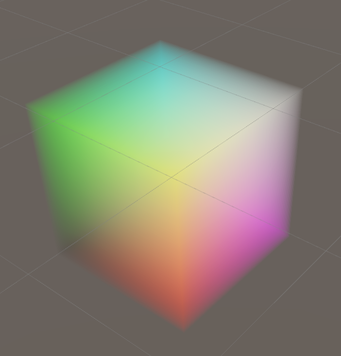

To use a 3D texture in a custom shaderA program that runs on the GPU. More info
See in Glossary, you can use the following:
3D material property declaration to add a 3D texture property. For example _MainTex ("Example 3D texture", 3D) = "white" {};
sampler3D sampler state to use the 3D texture as a shader input. For example sampler3D _MainTex;
tex3D HLSL method to sample the 3D texture. For example float4 color = tex3D(_MainTex, float3(0.5f, 0.5f, 0.5f));
The following is an example of a shader that uses raymarching to sample a 3D texture and render it as a semi-transparent volume.
To use the example, follow these steps:
Shader "Unlit/VolumeShader"
{
Properties
{
_MainTex ("Texture", 3D) = "white" {}
_Alpha ("Alpha", float) = 0.02
_StepSize ("Step Size", float) = 0.01
}
SubShader
{
Tags { "Queue" = "Transparent" "RenderType" = "Transparent" }
Blend One OneMinusSrcAlpha
LOD 100
Pass
{
CGPROGRAM
#pragma vertex vert
#pragma fragment frag
#include "UnityCG.cginc"
// Maximum number of raymarching samples
#define MAX_STEP_COUNT 128
// Allowed floating point inaccuracy
#define EPSILON 0.00001f
struct appdata
{
float4 vertex : POSITION;
};
struct v2f
{
float4 vertex : SV_POSITION;
float3 objectVertex : TEXCOORD0;
float3 vectorToSurface : TEXCOORD1;
};
sampler3D _MainTex;
float4 _MainTex_ST;
float _Alpha;
float _StepSize;
v2f vert (appdata v)
{
v2f o;
// Vertex in object space. This is the starting point for the raymarching.
o.objectVertex = v.vertex;
// Calculate vector from camera to vertex in world space
float3 worldVertex = mul(unity_ObjectToWorld, v.vertex).xyz;
o.vectorToSurface = worldVertex - _WorldSpaceCameraPos;
o.vertex = UnityObjectToClipPos(v.vertex);
return o;
}
float4 BlendUnder(float4 color, float4 newColor)
{
color.rgb += (1.0 - color.a) * newColor.a * newColor.rgb;
color.a += (1.0 - color.a) * newColor.a;
return color;
}
fixed4 frag(v2f i) : SV_Target
{
// Start raymarching at the front surface of the object
float3 rayOrigin = i.objectVertex;
// Use vector from camera to object surface to get ray direction
float3 rayDirection = mul(unity_WorldToObject, float4(normalize(i.vectorToSurface), 1));
float4 color = float4(0, 0, 0, 0);
float3 samplePosition = rayOrigin;
// Raymarch through object space
for (int i = 0; i < MAX_STEP_COUNT; i++)
{
// Accumulate color only within unit cube bounds
if(max(abs(samplePosition.x), max(abs(samplePosition.y), abs(samplePosition.z))) < 0.5f + EPSILON)
{
float4 sampledColor = tex3D(_MainTex, samplePosition + float3(0.5f, 0.5f, 0.5f));
sampledColor.a *= _Alpha;
color = BlendUnder(color, sampledColor);
samplePosition += rayDirection * _StepSize;
}
}
return color;
}
ENDCG
}
}
}

The volume Unity renders if you use the example shader with the 3D texture from the Create a 3D texture in a script page.